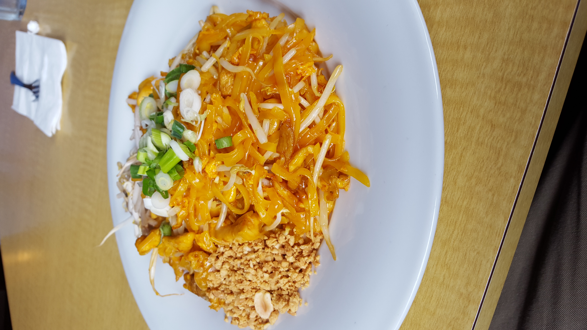
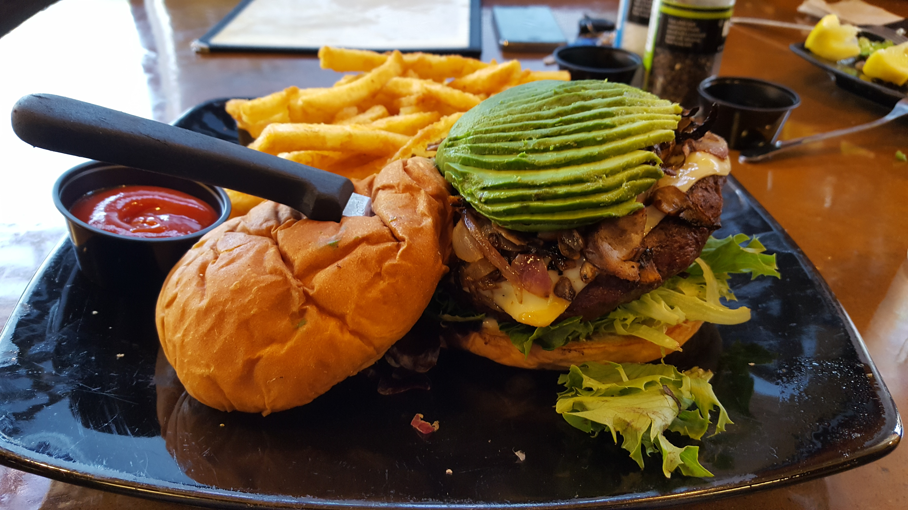
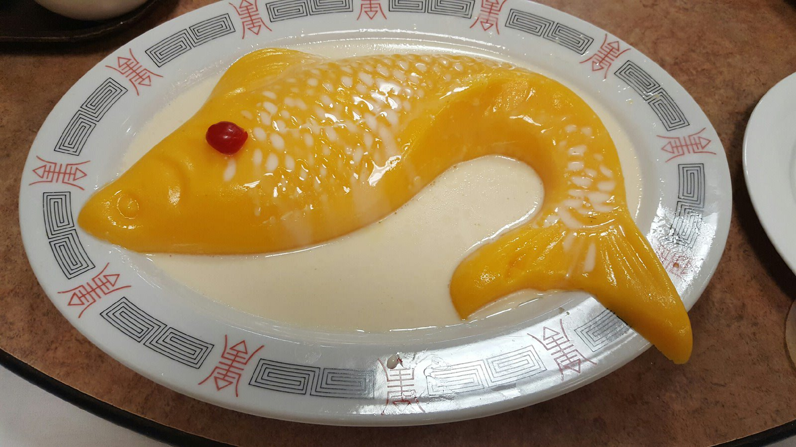
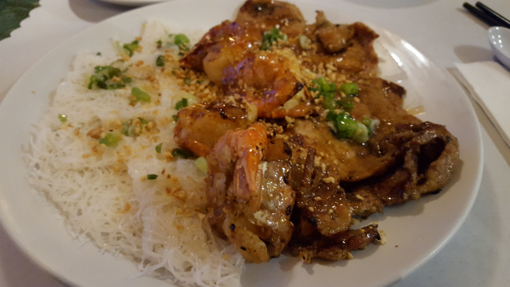

Pad-Thai, A signature Thai dish.
One of my favorite thai dish.

ElkBurger at FlamingGrill
My first time trying a elkburger. It was tasty.

Jello Fish
Interesting dessert?
Jello Mango fish

Lunch Box
Teriyaki Chicken, Rice, Fried Potato, Carrots, Salad

Dinner Time
Rice cake, chicken, salads
Future Food
Waiting for the next foodadventure
Food Adventure
Me, myself and I going through and showing the different type of foods that I have come across.